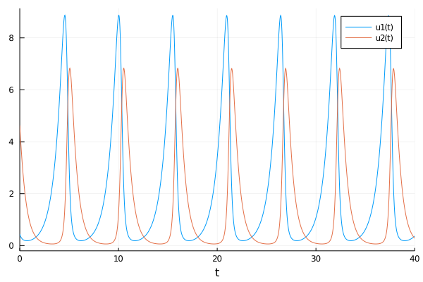
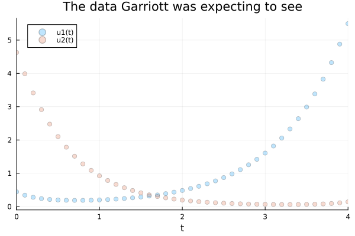
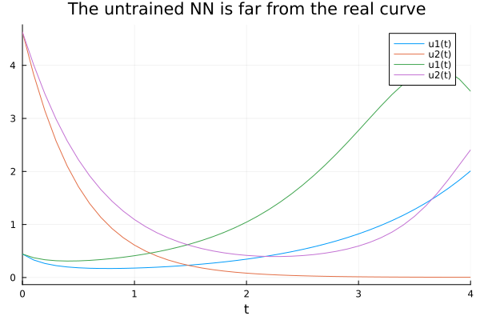
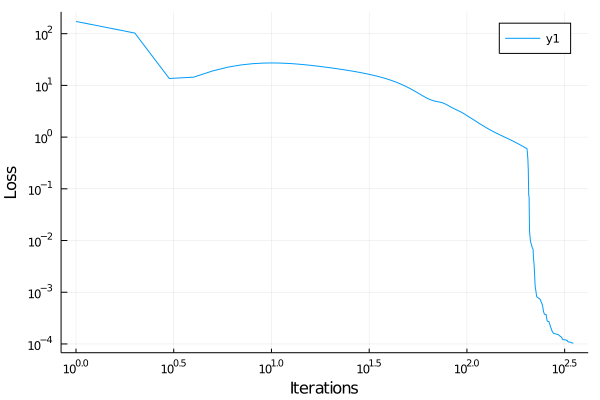
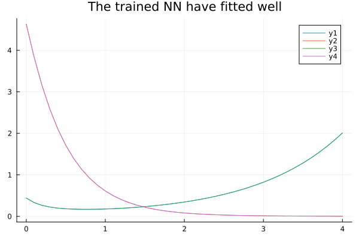

Chapter 12 Ultima continued
cd("./12_ultima_continued/")
import Pkg
Pkg.activate(".")
Pkg.instantiate()
using DifferentialEquations
using DiffEqSensitivity
using StatsPlots
using Plots
gr()
using OrdinaryDiffEq
using ModelingToolkit
using DataDrivenDiffEq
using LinearAlgebra
using Optim
using DiffEqFlux
using Flux##Letting the computer do science
Let’s think a little. What do you think is the process by which scientific discoveries are made?
First, you have some situation or event of interest from which you want to discover the rules that govern it. Second, you carefully design the experiments to get as much unbiased data as you can. Third, you analyze that data to gain some knowledge and, hopefully, you can begin to write some equations that condense the underlying process. Finally, you keep doing experiments to confirm that the equations you have invented are correct. You are doing science, my friend!
Throughout the book, we were learning a wide variety of statistical methods that sought to be as general as possible, but that required us to define the model to be used. The equations, then, were already defined and the algorithm only had to find the best parameters (or distribution of them) to fit that model to the data.
But what if I tell you that now we can start “talking” with the computer. That we can ask the computer to learn the model itself with the data. Not the parameters. But the equations that govern the process generating the data we give to the computer. Even more, that now we can “share” some incomplete knowledge that we have of some process and ask the computer to learn, with minimum data, the part of the knowledge that we lack. What? Is that even possible?.
12.1 The language of science
In order to start understanding if that fairytale is possible, first we need to understand the ways we have to “encoding” the dynamics of those processes. As Steven Strogatz said “Since Newton, mankind has come to realize that the laws of physics are always expressed in the language of differential equations.” And we can argue that it is a language that not only belongs to physics, but to all science and, in general, to the world in which we live.
But before any of you run off in fear, let’s demystify this subject a little. What is a differential equation and why are they useful?
Well the first thing to denote is that differential equations emerge whenever it’s easier to describe change than absolute values. As we saw in the Ultima Online Catastrophe, it is much easier to describe and define why populations grow or shrink, rather than explain why they have the particular absolute values in a particular point in time. Come on! It’s much more easy to comprehend that if there are lots of predators, the prey’s population will shrink than understand why there are, for example, 223,543 prays and 112,764 predators the 6 of may. Does this make sense?
\(\frac{dPrey}{dt} = Prey*(b_{prey} - m_{prey}*Pred)\)
\(\frac{dPred}{dt} = Pred*(b_{pred}*Prey - m_{pred})\)
Remember that d can be read as change and the hole expression “\(\frac{dPrey}{dt} =\)” is just saying “The change of prey’s population over time is equal to …” and the other part, as we already saw in the last chapter, is answering “hey! that change is proportional to the prey’s population (because they reproduce) and to the interaction with the Predator population, that contributes to the prey’s mortality rate.” Isn’t that beautiful?
Now, try to think a way to put the absolute values of each population over time into equations. Have any clue? No? As we said, change is much easier to describe.
Or you can take a much more familiar example: In Newtonian Mechanics motion is described in terms of Force.
\(F = m*a\)
But Force determines acceleration, which itself is a statement about change. We are so familiar with that equation that we tend to forget that it is a differential equation (and as Steven mentions, is the mother of all differential equations).
\(F = m*\frac{dVelocity}{dt}\)
\(F = m*\frac{d^2Position}{dt^2}\)
This transformation is just showing something that everyone already knows: Acceleration is the change of Velocity over time, and Velocity is the change of position over time. And that implies that Acceleration is the second derivative (change) on position over time.
We just learned that the language of differential equations is fundamental for doing science. So, if we want the computer to learn equations that explain scientific events, it must know how to deal with this type of equations. And this is easily solved by the Scientific Machine Learning (SciML) ecosystem.
12.2 Scientific Machine Learning for model discovery
But dealing with differential equations is not the main thing that SciML has to offer us. Instead it gives us the way to do science in cooperation with artificial intelligence. What? To be able to comprehend this, let’s rewiew how “classic” machine learning works.
It turns out that a neural network is literally a function. Is a function in the sense that it takes a bunch of numbers, applies a series of transformations, and return another bunch of numbers:
\(f(x) = y <=> ANN(x) = y\)
So, artificial neural networks are functions. But they are special functions, as they can change the connections that made the specific function they represent. They do this in a process called training where they adjust its connections (parameters) in order to correctly predict. So, with only one neural network, we can “represent” lots of functions. What’s more, there is this Universal Approximation Theorem that says that a neural network that is deep and wide enough (that is, has enough parameters) can approximate any function. You only need to feed it with enough data, so it can learn the optimal set of weights for its parameters.
This is why neural networks come hand in hand with big data: you need a lot of data in order to let the neural network learn the correct weights. But there is a problem: Big data costs billions, or may not even be available! (if you don’t believe me, ask the Large Hadron Collider scientists to run 1 million experiments to train a NN, I’m sure they’ll be happy to help you :P)
Can you imagine a way to drastically reduce the data needed to train the NN in a significant way? Well, how about incorporating scientific knowledge into machine learning? If we think it for a moment, we can realize that a scientific model is worth a thousand datasets. The equations work like a proxy of thousands of experiments, people investigating, years of research. in other words: tons of data.
So if we create a way to inform all of that precious data, so it can focus on learning a specific part of the equation (some part that we don’t know), it could do it with a minimum quantity of data! Lucky us, Christopher Rackauckas and his team already found a way.
The concept we are talking about is called “Universal Differential Equations.” Let’s use them to recover some missing equation components from the Virtual Catastrophe from the last chapter!
12.2.1 Looking for the catastrophe culprit
So let’s imagine again (yes, we imagine lots of things in this book) that we are Richard Garriott a day before the release of his game. He was tuning the last details of his virtual ecosystem. The model is simple but powerful, and ready to go:
\(\frac{dPrey}{dt} = Prey*(b_{prey} - m_{prey}*Pred) = Prey*(1.3 - 0.9*Pred)\)
\(\frac{dPred}{dt} = Pred*(b_{pred}*Prey - m_{pred}) = Pred*(0.8*Prey - 1.8)\)
So after a delicate tuning, he determines that the best parameters for his virtual ecosystem are:
\(b_{prey} = 1.3\) \(m_{prey} = 0.9\) \(b_{pred} = 0.8\) \(m_{pred} = 1.8\)
He smiles and happily goes to sleep, thinking that tomorrow is the big day.
Let’s see how were the system equilibrium that he decided.
begin
#The Lotka-Volterra model Garriott define for Ultima Online
function lotka_volterra(du,u,p,t)
prey, pred = u
birth_prey, mort_prey, birth_pred, mort_pred = p
du[1] = dprey = (birth_prey - mort_prey * pred)*prey
du[2] = dpred = (birth_pred * prey - mort_pred)*pred
end
p0 = Float32[1.3, 0.9, 0.8, 1.8]
u0 = Float32[0.44249296,4.6280594]
prob_ = ODEProblem(lotka_volterra,u0,(0.0,40.0),p0)
end;sol = solve(prob_,Tsit5());plot(sol)
So the system seems in complete equilibrium.
12.2.2 The infamous day begins.
And finally we arrive at the day when the madness begins.
Garriott wakes up early, doesn’t have any breakfast and goes to meet his team. Everything is ready. The countdown starts: 3, 2, 1… And the game is online, running.
After the champagne, hugs and a little celebration Garriott returns to work and starts to analyze the metrics to see if everything is alright, and it does. He relax a little bit until something calls his attention: The curves of carnivorous and herbivorous animals are a little different than they should be. There are still too few points (only four hours from the release) to be alarmed, but he decides to do a deeper analysis. Luckily, a few days ago, he had read a paper on the Universal ODEs, so he thinks they can help him in this case.
function lotka_volterra_players(du,u,p,t)
#Lotka-Volterra function with players that hunt
#Of course, Garriott doesn't know about this new players part of the equation.
#He only saw some differences in the real curve vs the one he expected.
birth_prey, mort_prey, birth_pred, mort_pred, players_prey, players_pred = p
du[1] = (birth_prey - mort_prey * u[2] - players_prey)*u[1]
du[2] = (birth_pred * u[1] - mort_pred - players_pred)*u[2]
end## lotka_volterra_players (generic function with 1 method)begin
tspan = (0.0f0,4.0f0)
p_ = Float32[1.3, 0.9, 0.8, 1.8, 0.4, 0.4]
prob = ODEProblem(lotka_volterra_players, u0,tspan, p_)
solution = solve(prob, Vern7(), abstol=1e-12, reltol=1e-12, saveat = 0.1)
end;begin
scatter(solution, alpha = 0.25, title="The data Garriott was seeing")
plot!(solution, alpha = 0.5)
end
begin
expected_prob = ODEProblem(lotka_volterra, u0,tspan, p0)
expected_solution = solve(expected_prob, Vern7(), abstol=1e-12, reltol=1e-12, saveat = 0.1)
end;begin
scatter(expected_solution, alpha = 0.25, title="The data Garriott was expecting to see")
plot!(expected_solution, alpha = 0.5)
end
As you can see, the animals were taking more time to recover. The period of the cycle was longer than it should be: A clear sign that something was killing them. But he wanted to be sure. The Universal ODEs were key to do so.
So, he start thinking “I know that the model has to be running cause I can see it in the code! So maybe, something external is producing this divergence. Something that I don’t know. But something that a neural network could find out” Let’s see
begin
X = Array(solution)
#And let's add some noise to make it more difficult. Why? Because its fun!
Xₙ = X + Float32(1e-3)*randn(eltype(X), size(X))
end## 2×41 Array{Float32,2}:
## 0.443611 0.331444 0.267121 … 1.67955 1.83754 2.00843
## 4.62695 3.82893 3.1487 0.00362308 0.00367157 0.00470656begin
# Define the neural network
L = FastChain(FastDense(2, 32, tanh),FastDense(32, 32, tanh), FastDense(32, 2))
p = initial_params(L)
function dudt_(u, p,t)
prey, pred = u
z = L(u,p)
[p_[1]*prey - p_[2]*prey*pred + z[1],
-p_[4]*pred + p_[3]*prey*pred + z[2]]
end
end## dudt_ (generic function with 1 method)So let’s stop for a minute to analyze the code that Garriott just proposed.
In the first two lines, he just defines the neural network, that is going to learn the missing components of the two equations (one for the dynamics of the Pray and other for the dynamics of the Predator) and fill the variable p with its untrained parameters.
Then, he is defining the Universal Differential Equation. Where he is specifying the parts of the model that he knows, and adding a neural network to learn other things that might be happening (and we know that indeed were happening). In other words, he is proposing:
\(\frac{dPrey}{dt} = Prey*(1.3 - 0.9*Pred) + ANN_1(prey, pred)\)
\(\frac{dPred}{dt} = Pred*(0.8*Prey - 1.8) + ANN_2(prey, pred)\)
So, as we already know, he is just adding a function. Which one? We already know that those are \(Prey*players_{prey}\) and \(Pred*players_{pred}\) (and \(players_{pred}=players_{prey}=0.4\)), but Garriott doesn’t, and is exactly what the neural network is going to learn for him.
begin
prob_nn = ODEProblem(dudt_,u0, tspan, p)
sol_nn = solve(prob_nn, Tsit5(), u0 = u0, p = p, saveat = solution.t)
end;begin
plot(solution)
plot!(sol_nn, title="The untrained NN is far from the real curve")
end
function predict(θ)
Array(solve(prob_nn, Vern7(), u0 = u0, p=θ, saveat = solution.t,
abstol=1e-6, reltol=1e-6,
sensealg = InterpolatingAdjoint(autojacvec=ReverseDiffVJP())))
end## predict (generic function with 1 method)function loss(θ)
pred = predict(θ)
sum(abs2, Xₙ .- pred), pred
end## loss (generic function with 1 method)begin
const losses = []
#just adding a callback to supervise the network's learning
callback(θ,l,pred) = begin
push!(losses, l)
if length(losses)%50==0
println("Current loss after $(length(losses)) iterations: $(losses[end])")
end
false
end
endAnd lets train the NN!!
# First train with ADAM for better convergence
res1 = DiffEqFlux.sciml_train(loss, p, ADAM(0.01), cb=callback, maxiters = 200);# Train with BFGS
res2 = DiffEqFlux.sciml_train(loss, res1.minimizer, BFGS(initial_stepnorm=0.01), cb=callback, maxiters = 10000);# Plot the losses
plot(losses, yaxis = :log, xaxis = :log, xlabel = "Iterations", ylabel = "Loss")
begin
# Neural network guess
L̂ = L(Xₙ,res2.minimizer)
# Plot the data and the approximation
NNsolution = predict(res2.minimizer)# Plot Trained on noisy data vs real solution
begin
plot(solution.t, NNsolution)
plot!(solution.t, X, title="The trained NN have fitted well")
end
Nice! Now that we have our neural network already learned the Input-Output relation in order for the entire system to behave as the data Garriott were seeing in that Infamous morning, we need to transform that Input-Output behaviour into some function. We do this in order to gain interpretability of what may be happening and, in a scientific frame, learn the underlying model. We do this by creating a function space in order to the NN learn which function (or linear combination of those) is the best one to describe that Input-Output relation. The loss function to do so is designed in a way that the result will be the least complex one, that is, the answer will be the simplest function that behaves like the NN.
begin
## Let's continue with the Sparse Identification
# Create a Basis
@variables u[1:2]
# Add many polynomial to the Basis
polys = Operation[1]
for i ∈ 1:5
push!(polys, u[1]^i)
push!(polys, u[2]^i)
for j ∈ i:5
if i != j
push!(polys, (u[1]^i)*(u[2]^j))
push!(polys, u[2]^i*u[1]^i)
end
end
end
endbegin
# And some sinusoidal functions
h = [cos.(u)...; sin.(u)...; polys...]
basis = Basis(h, u)
h
end;basis## "29 dimensional basis in [u₁,u₂]"So, as you can see above, we just created a function space of 29 dimensions. That space includes every possible linear combination of each dimension. And we are going to ask SINDy to give us the simplest function that shows the same Input-Output behaviour the neural network just learned.
Without saying more, let’s do it!
begin
# Create an optimizer for the SINDy problem
opt = SR3()
# Create the thresholds which should be used in the search process
λ = exp10.(-7:0.1:3)
# Target function to choose the results from.
g(x) = x[1] < 1 ? Inf : norm(x, 2)
Ψ = SINDy(Xₙ[:, 2:end], L̂[:, 2:end], basis, λ, opt, g = g, maxiter = 10000, normalize = true, denoise = true)
endΨ.equations[1]## "p₁ * u₁"Ψ.equations[2]## "p₂ * u₂"OMG! The equations were perfectly restored! You can read this as:
\(ANN_1(prey, pred) = p_1*u_1 = p_1*Prey\)
\(ANN_2(prey, pred) = p_2*u_2 = p_2*Pred\)
\(\frac{dPrey}{dt} = Prey*(1.3 - 0.9*Pred) + p_1*Prey = Prey*(1.3 - 0.9*Pred + p1)\)
\(\frac{dPred}{dt} = Pred*(0.8*Prey - 1.8) + p_2*Pred = Pred*(0.8*Prey - 1.8 + p2)\)
So, Remembering that we define the data Garriott was seeing as:
\(\frac{dPrey}{dt} = Prey*(1.3 - 0.9*Pred - players_{prey})\)
\(\frac{dPred}{dt} = Pred*(0.8*Prey - 1.8 - players_{pred})\)
And that we also define that \(players_{prey} = players_{pred} = 0.4\), the recover parameter from de NN should \(-0.4\). Does it make sense?
Lets ask for the parameters then:
parameters(Ψ)## "-0.36237425, -0.40059045"So, the parameters are a bit off. But now that we have the equations restored, we can run another SINDy to gain much more accuracy:
begin
unknown_sys = ODESystem(Ψ)
unknown_eq = ODEFunction(unknown_sys)
# Just the equations
b = Basis((u, p, t)->unknown_eq(u, [1.; 1.], t), u)
# Retune for better parameters (we already know the equations)
Ψf = SINDy(Xₙ[:, 2:end], L̂[:, 2:end], b, STRRidge(0.01), maxiter = 100, convergence_error = 1e-18)
endparameters(Ψf)## "-0.39629772, -0.40179992"So we recover the equations and its parameters with an outstanding accuracy. And that is even more incredible if we remember that we did this with a minimum of data. After seeing that, Garriott took a big deep breath. He immediately understood what was going on. The players were mass killing the animals. He called his team and started planning the strategy to face this, not knowing that it already was a lost cause…
12.3 Summary
In this chapter, we continued to deepen our understanding of systems of differential equations and their complex behavior. We went a step further, introducing the concept of universal differential equations which allow us, given a very small amount of data, to estimate some unknown term of the system. This opens a very big door, connecting machine learning and science, which can greatly enhance the production of knowledge.
12.4 References
12.5 Give us feedback
This book is currently in a beta version. We are looking forward to getting feedback and criticism:
- Submit a GitHub issue here.
- Mail us to martina.cantaro@lambdaclass.com
Thank you!